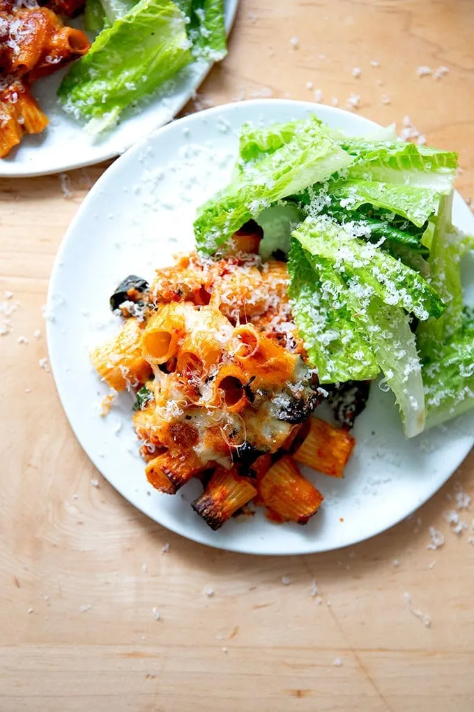

Simple Pasta
Ingredients:
- 200g pasta
- 2 tablespoons olive oil
- 2 cloves garlic, minced
- 1 can (400g) chopped tomatoes
- Salt and pepper to taste
- Fresh basil leaves, for garnish
Instructions:
- Cook pasta according to package directions.
- While pasta is cooking, heat olive oil in a pan over medium heat.
- Add minced garlic and cook until fragrant (about 1 minute).
- Pour in chopped tomatoes, season with salt and pepper, and simmer for 5-10 minutes.
- Drain the cooked pasta and add it to the sauce. Toss to coat.
- Serve immediately, garnished with fresh basil leaves.